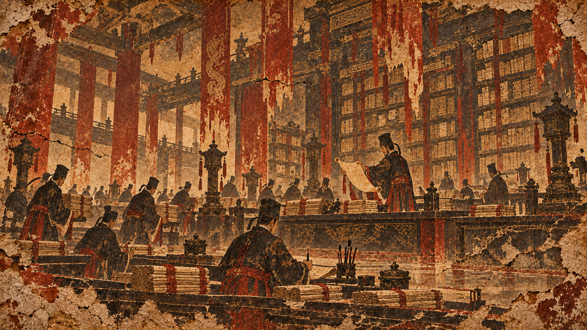

황제의 조서
대진이 천하를 거느린 지 이천 년이 넘었고, 강산과 백성이 모두 천명의 그늘 아래 있다. 그러나 사해가 아직 고요하지 아니하여 북방에는 혈신의 잔향이 남아 있고, 남방에는 사교의 불씨가 꺼지지 않았으며, 강호의 무리와 요이의 족속 또한 스스로의 자리를 잊고 있다.

이에 병부와 천명원, 신궁사에 명하여 옛 전장과 군국의 법, 방외의 종족과 여러 이적, 사문邪門과 요변妖變, 더불어 천하의 무공과 강호대계를 모아 한 책으로 엮게 하니, 이는 장차 제국의 신하들로 하여금 적을 알고 스스로를 알게 하려 함이다.
「하늘 아래 두 개의 명이 있을 수 없고, 천하 아래 두 개의 질서가 있을 수 없다.」
이 책은 외번의 서책도, 강호의 잡록도 아니다. 대진의 눈으로 천하를 분류하고, 대진의 법으로 그 위험을 재며, 대진의 군세가 무엇을 지켜야 하는지 정한 국가의 기억이다. 열람자는 이 문서에 기재된 명칭과 위계가 곧 조정의 공식 판단임을 명심할지어다.
天命院 교감주 — 본서에서 ‘천하’라 함은 단순한 지리를 뜻하지 않는다. 천고일제가 법통을 세운 이래, 천명에 복속할 수 있는 모든 땅과 백성을 아울러 일컫는다.
神宮司 封緘識 ・ 甲等秘
천고연간의 일부 사료는 후대의 교정 과정에서 삭제되었다. 특히 혈신대전 직전 십삼 년의 상주문은 정본과 원본 사이의 차이가 크다. 편수관은 황실에서 허가한 본문만을 싣고, 의심스러운 곳에는 제한된 비주를 단다.
※ 권내 위협평정은 병부 기준을 따른다. ‘강하다’와 ‘멸하기 어렵다’는 동일하지 않으며, 특히 신화경 이상 존재에 대해서는 파괴력・불사성・법칙간섭을 별도로 판단한다.